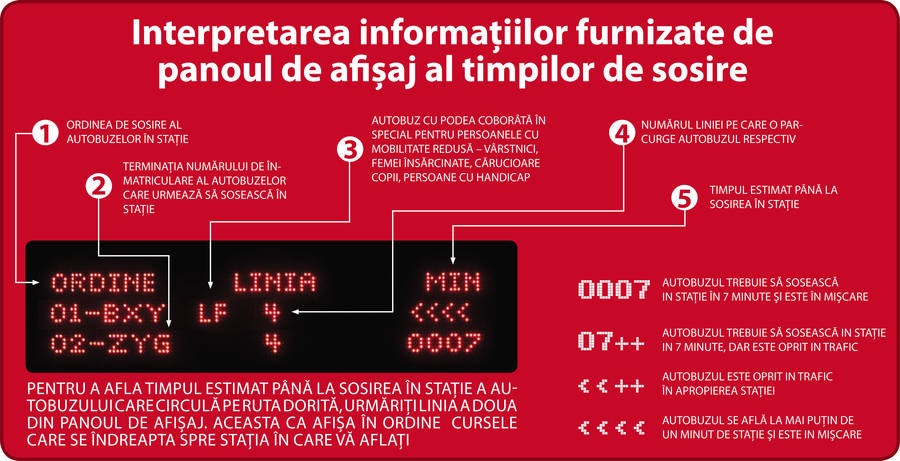
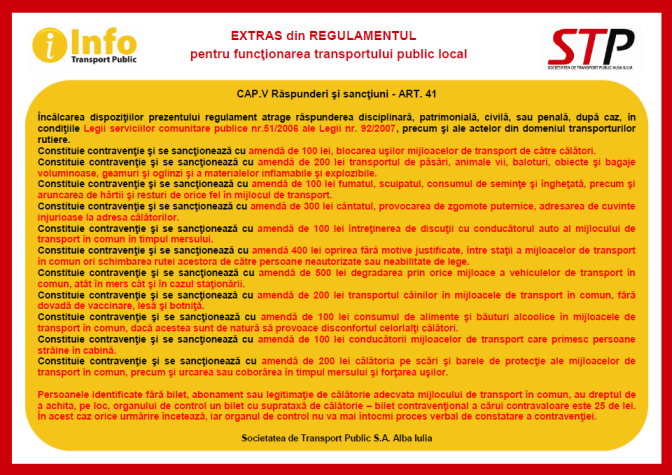

Cum afli programul autobuzelor?
Internet – utilizează route-plannerul de pe siteul nostru pentru planificarea călătoriilor.
Mobil – descoperă versiunea mobilă a siteului nostru și te vom ajuta să îți planifici călătoria în cele 7 zone metropolitane.
Informații legate de programul autobuzelor în zona 1: +40 258 812 826
Informații legate de programul autobuzelor în zonele 2 – 7: +40 258 812 967
În stația de autobuz – citește panourile din stații și află orarul autobuzelor și rutele pe care circulă.
Nu uitați: în autobuze și în stații vă puteți orienta cu ajutorul anunțurilor vocale.
Sfaturi pentru călători
Pentru a putea oferi cele mai bune servicii de transport public, avem nevoie de ajutorul dumneavoastră. Vă prezentăm câteva sugestii cu privire modul în care călătoria poate deveni mai placută atât pentru dumneavoastră cât și pentru cei din jur:
-asiguraţi-vă că vă aflaţi în staţia corectă urmărind harta şi programul de circulaţie;
-consultaţi panoul electronic de informare;
-nu aşteptaţi autobuzul pe carosabil;
-conducătorul autobuzului are obligaţia de a opri în staţie cât mai aproape de bordură, pentru a vă facilita accesul;
-aşteptaţi oprirea autobuzului;
-acordaţi prioritate călătorilor ce coboară;
-urcarea în autobuz se face numai pe uşa din faţă, din dreptul conducătorului autobuzului;
-respectați ordinea de sosire în staţie la urcarea în autobuz, acordând întâietate persoanelor în vârstă, femeilor însărcinate sau cu copii în braţe, daţi dovadă de civilizaţie şi respect faţă de ceilalţi călători;
-persoanele cu dizabilitati pot solicita sprijinul conducătorului auto pentru a le facilita accesul sau coborârea din mijlocul de transpor;
-biletul poate fi cumpărat de la chioşcurile sau automatele de vânzare bilete din staţiile de autobuz;
-procurarea biletului de călătorie este absolut necesară dacă nu posedaţi altă legitimaţie de călătorie valabilă. Atunci când cumpăraţi un bilet în autobuz, este bine să plătiţi cu o sumă potrivită de bani. Şoferul poate refuza să accepte bancnote de valoare mai mare de 50 RON în cazul în care nu poate oferi rest;
-biletul devine valabil numai după ce a fost validat. Validarea biletului este obligatorie şi se face introducând biletul în aparatul de validare montat în salonul autobuzului. Biletul, odată validat, trebuie păstrat pe toată perioada călătoriei;
-abonamentele de călătorie pot fi achiziţionate de la punctele de servicii situate în vecinătatea staţiilor de autobuz;
-urmăriţi afişajul electronic amplasat în autobuz. Acesta vă indică linia pe care circulaţi şi staţia care urmează;
-solicitaţi oprirea autobuzului prin apăsarea butonului „STOP” din vecinătatea uşii;
-nu există nici o taxă pentru o persoană care călătoreşte cu un copil într-un cărucior. Căruciorul pentru copii trebuie încărcat prin uşile de la mijlocul autobuzului.
Aşteptaţi autobuzele cu podea coborâtă (LF) în care accesul este mai uşor. Nu lăsaţi copilul singur sau fără supraveghere;
-copiii sub 5 ani au permisiunea de a călători gratuit în compania unei persoane majore care a plătit o călătorie sau însoţit de o persoană cu un copil în cărucior.
-câinii de poliţie şi câinii ghid pot să călătorească în autobuze. Şoferul decide dacă puteţi călători în autobuz cu un animal de companie.
-scaunele cu rotile sunt permise în autobuze. Din motive de siguranţă sunt interzise în autobuze scaunele electrice cu rotile;
-printr-un comportament civilizat faţă de conducătorul auto, îi impuneţi acestuia un tratament similar;
-păstrarea ordinii şi curăţeniei, în autobuz şi în jurul acestuia, este dovadă de respect faţă de cei din jurul tău; înainte de a murdări sau deteriora scaunele, alte dotări din salonul autobuzului gândiţi-vă dacă v-ar face plăcere ca data următoare să călătoriţi aşezaţi pe nişte scaune murdare, deteriorate;
Citirea corecta a panourilor din statii
Regulament pentru functionarea transportului public local
